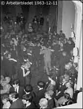
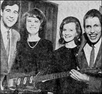
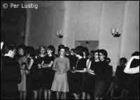

Ockelbo Nu - men
Förr!
Kjell Söderström minns Gotan
| Som första krönikör i Ockelbo.nu, känns mycket hedrande, vill jag förflytta dig som läsare tillbaka till 1960-talets Ockelbo och de populära danser som anordnades på GOTAN, med adress Norra Åsgatan 56 . Jättekul dans i Ockelbo var rubrikerna i tidningarna måndagen den 13 april 1959 när de offentliga danserna i Godtemplarlokalen återuppstod efter många år. 400 danslystna ungdomar kom och trivdes tillsammans med Gunnar Falks orkester från Sandviken. Trio mé Bumba engagerades till lördagen den 7 december 1963 och kom till GOTAN och fyllde lokalen med dansant ungdom till bristningsgränsen. 800 biljetter såldes den kvällen.  Full fart på dansgolvet. [Klicka på bilden för att förstora] Du som har varit till GOTAN vet hur det "ser ut" men för Dig som inte har varit dit så kan det beskrivas på följande sätt: I entréplanet kommer Du till "biljettfarstun" med foajé där klädinlämning kan ske. En trappa ner i anslutning till foajé finns "herrarnas". I anslutning till foajén kommer Du till danslokalen med scen en meter högre än dans- golvet. Från danslokalen finns passage till ytterligare en "kläd- inlämning" och vidare en trappa ner hittar Du serveringen. Fanns intresse av att koppla av från dansen med sin "partner" kunde "paret" ta trappan upp från foajén till läktaren för att där sitta och lyssna på musiken och se de dansande från ovan. Som jag berättade såldes det 800 biljetter den kvällen vilket innebar att Gotan var fullpackad med dans. anta ungdomar från när och fjärran. |
 Barbro Jonsson och Inga-Lill Ådahl tillsammans med orkestermedlemmarna Bertil Lindblom och "Bumba" Lindqvist. Jag minns - som arrangör - att förflyttningen genom danshavet efter ena långväggen, ca 15 meter, kunde ta 10 minuter den ena gången medan nästa "passage" kunde gå på 0-tid. Det skulle inte förvåna mig om det var någon som kom ner på "herrarnas" och blev kvar där en stor del av kvällen. Det var en höjdarkväll som förmodligen många kommer ihåg och minns med glädje - kanske inte för den som hamnade på "herrarnas" större delen av kvällen. En av höjdarlåtarna då var "Spel-Olles gånglåt". Det var ofta "non stop" dans och den här kvällen fanns "The Dangers" också på scenen.  I väntan på kavaljerer. [Klicka på bilden för att förstora] En annan gång många år senare -sportlovet 1982 - engagerades Efva Attling med X-models . När topplåten "Två av oss" kom gick ett förväntans fullt jubel genom salongen och alla sjöng med i refrängen. En bland många högtidsstunder i Gotan med unga människor, häftig ljusshow och rock med tryck. Jag kommer väl ihåg när Efva och jag satt ute i foajén när gaget betalades i nästan enbart fem och tio kronors sedlar. Tack redaktionen för att jag fick inleda denna sida med några minnen från "arrangemang i Ockelbo". Denna artikel, författad av Kjell Söderström, är införd i Ockelbo.nu under juli månad 2001. |